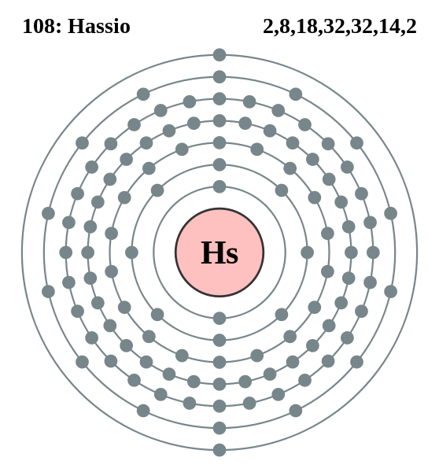

|
|
||
|
Laurencio Este elemento se comporta como el lutecio, es trivalente y puede clasificarse como el primer metal de transición del 7.º período. Debido a su configuración como electrón, puede tener una volatilidad similar al plomo. Se conocen 12 isótopos de nobelio radiactivo y se han identificado isómeros nucleares para las masas atómicas 251, 253 y 254. Los períodos de semidesintegración van de fracciones de milisegundo a 58 minutos. Se prevé que un isótopo no descubierto, 261No, tenga un período de semidesintegración de 170 minutos. |
 |
DATOS Número Atómico: 103 Peso Atómico: 262 Electronegatividad: 1.3 Configuración Electrónica: [Rn]5f147s27p1 Estados de Oxidación: No. de Electrones de Valencia: 8 |